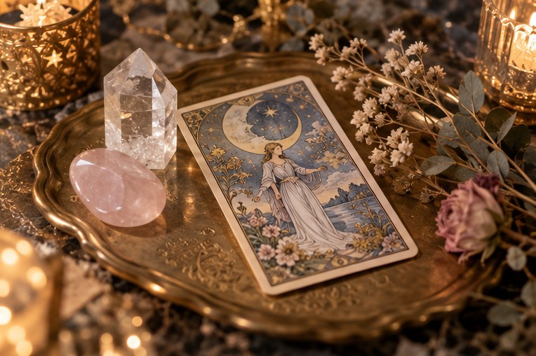
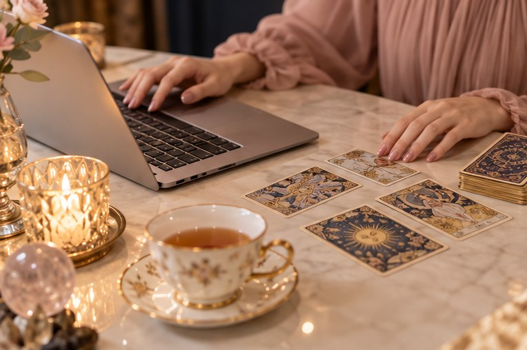
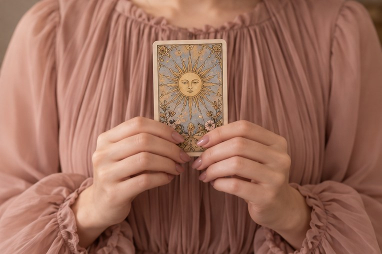

大切な人の気持ちが
わからなくて、不安になる
このままの働き方でいいのか、
ふと立ち止まってしまう
誰かに話したいけれど、
身近な人には相談しにくい
答えを決めつけるのではなく、
「いまの自分の気持ち」に気づくための時間を。

こわいことを言うための鑑定ではありません。カードの意味を、前向きなヒントとしてお伝えします。

ご自宅からビデオ通話やチャットで。落ち着いた鑑定ルームでの対面鑑定もお選びいただけます。

話したいことがまとまっていなくても大丈夫。ゆっくり言葉にしていきましょう。
ご希望のメニューと日時を、LINEかフォームからお知らせください。
話したいテーマを、ひとことで大丈夫なのでお送りください。
カードを一緒に見ながら、気持ちを整理していきます。
鑑定内容のメモを、あとからお送りします。
話しているうちに、自分が本当はどうしたいのかがわかってきました。帰り道、気持ちがとても軽かったです。
夜遅くでもオンラインで相談できて助かりました。やさしい言葉ばかりで、こわさは全くありませんでした。
カードの写真つきのお返事を、迷ったときに何度も読み返しています。お守りのような存在です。
はじめての方がほとんどです。ご相談内容がまとまっていなくても大丈夫。雑談からゆっくり始めましょう。
カードには、どれも前向きな意味があります。不安をあおるようなお伝えの仕方はしませんので、ご安心ください。
ご相談の内容やお名前を、第三者にお伝えすることはありません。
はい。カードを画面に映しながら進めるので、対面と同じようにご覧いただけます。